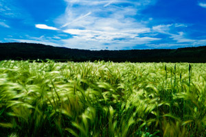

A Family Place
by Bambi Gibson
My father was born at Eight-Mile in Soda Springs, Idaho on the family farm. His mom passed away in child birth when he was 2 years old. I have quite a few amazing aunts, uncles, and cousins in Soda Springs. Our family reunions have been held at Hooper Springs for many years. The reunion moved to Kelly Park in later years. The geyser at Geyser Park is interesting to watch. One of the most fascinating things to watch is the red hot molten steams of waste slag being dumped on the west side of the plant. The plant has furnaces that turn phosphate ore into elemental phosphorous, which is used in herbicides, hydraulic fluids, and food products.

 30 N 1st E
Preston, ID 83263
30 N 1st E
Preston, ID 83263